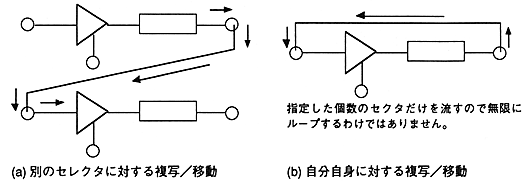
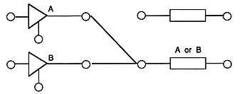

input |
|---|
○: Connectable (1 to 1) ... Only one output connector can be connected to one input connector △: Connection is possible (many-to-one) ... Multiple output connectors can be connected to the same input connector (OR condition) ×: Connection not possible
∙ Whether to process connection (disconnection) with a single command or to combine processing of connection and inflow / outflow depends on each device.
* CD-ROM and MPEG decoder are single processes, and others (host, copy / move, etc.) are complex processes.